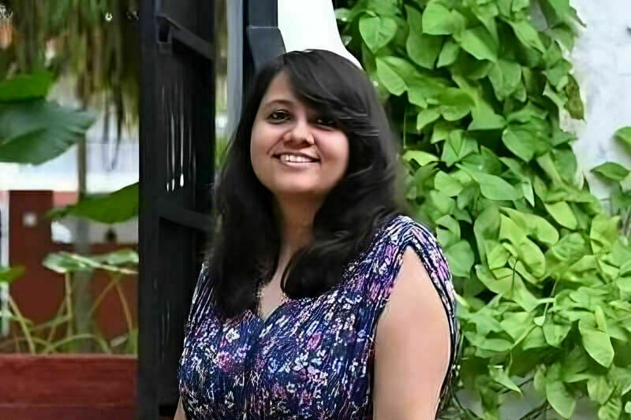

UNIVERSITY
Adm. Christopher Grady, Vice Chairman of Joint Chiefs of Staff, to deliver 2025 Commencement address

|

UNIVERSITY |
RESEARCHTwo engineering professors named Senior Members of National Academy of invetorsCOLLEGES AND SCHOOLSWomen Who Inspire: Monalisa |

|
RESEARCHThe Opportunity of InquiryFor scholars who share a common passion for inquiry because of what it can reveal about our world and ourselves, there is opportunity here. |
FAITH & SERVICEThe Demands of JusticeNotre Dame is animated by a faith that inspires us to seek knowledge because of the powerful tool it can be to improve humankind. |
|

|
RESEARCHThe Opportunity of InquiryFor scholars who share a common passion for inquiry because of what it can reveal about our world and ourselves, there is opportunity here. |
.jpeg)
CENTERS AND INSTITUTEAllison and Thomas Franco make transformative gift for Notre Dame institute advancing research excellence and public engagement in the liberal arts Latest News |

LATEST NEWSBrandon E. Roach appointed vice president and Robert K. Johnson General Counsel |
LATEST NEWSAdm. Christopher Grady, Vice Chairman of the Joint Chiefs of Staff, to deliver Notre Dame’s 2025 Commencement address |

GLOBALA pathway out of poverty for children in India |

COMMUNITY |

UNIVERSITYHistory, West Point, and 9/11 memorial inspire ND ROTC students in New York |